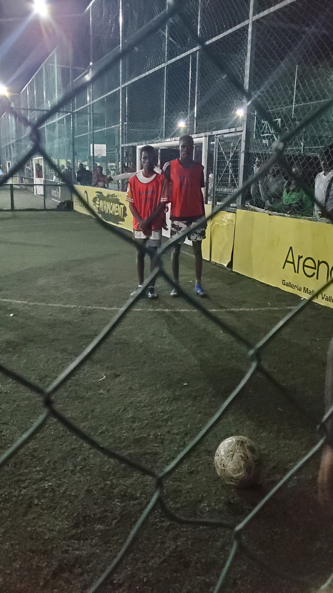

About Me.
Bill Kimtai is a passionate software engineer that is committed to creating original solutions for challenging issues. Bill has an excellent eye for detail and a talent for solving problems, which help him create software that is both reliable and easy to use.Engaging in diverse outdoor pursuits like hiking and cycling allows him to maintain his physical fitness level after work. Bill loves to read a lot in order to keep up with the newest advancements in technology and other fields, as well as to broaden his knowledge. Bill is always willing to take on new challenges and have a significant effect in the software development industry thanks to his excellent work ethic and upbeat attitude.
Hobbies.
- Hiking & Nature Exploration: Bill likes to go on hikes along beautiful trails and take in the sights of different natural environments.
- Cycling: Bill has a strong interest in cycling and likes to take long rides to be fit and see new locations, whether they are in the city or the countryside.
- Reading: To satisfy his curiosity and broaden his knowledge, Bill is a voracious reader who likes to delve into a variety of subjects, including science fiction, technology, history, and biographies.
- Cooking & Culinary Adventures: Bill enjoys experimenting with new recipes and cooking methods, learning about various cuisines, and throwing dinner parties to share his culinary creations with friends and family.
- Photography: Whether it's breathtaking vistas, unposed portraits, or urban views, Bill loves to capture the beauty of the world around him with his camera. He enjoys using his creative skills to compose and edit images to create powerful visual narratives.

.jpeg "NGETUNDO")
Contact Information
Phone no. 0726546402
Email address: billkimtai4@gmail.com
Instagram account: thee_kim.tai